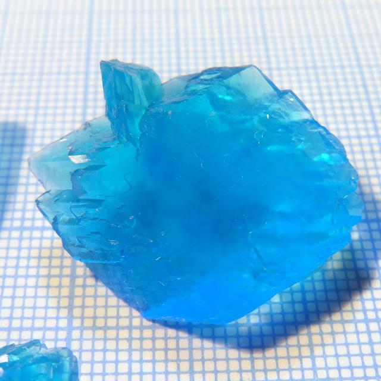

Tag: sulfate

Ammonium Alum
Formula: NH4Al(SO4)2·12H2O
 The biggest specimen in my collection. Mass is 45g, growth time is 4 months.
The biggest specimen in my collection. Mass is 45g, growth time is 4 months.
Details ...
Potassium Sulfate
Potassium sulfate K2SO4 is a salt of potassium and sulfuric acid. It is colorless, water-soluble crystalline solid, mainly used as fertilizer.

Details ...
Potassium Zinc Sulfate
Formula: K2Zn(SO4)2·6H2O

Potassium twin of ammonium zinc sulfate, visually indistinguishable from it. I suspect that precise measurement could reveal some subtle differences in angles between faces, but for the naked eye these compounds look the same. Similarly, baking soda can be used to improve crystal quality (see "Growing" section).
Details ...
Triglycine Sulfate
Hexakis(carbamide) Zinc Sulfate

Potassium Magnesium Sulfate
Mohr's Salt

{kind=link}
{kind=link}
Potassium Alum
{kind=link}
Copper-Magnesium Schoenite
A mixed compound, solid solution of 2 different Tutton's salts: potassium-copper and potassium-magnesium.  Approximate formula: K2(Mg0.5Cu0.5)(SO4)2·6H2O
{kind=link}
Details ...